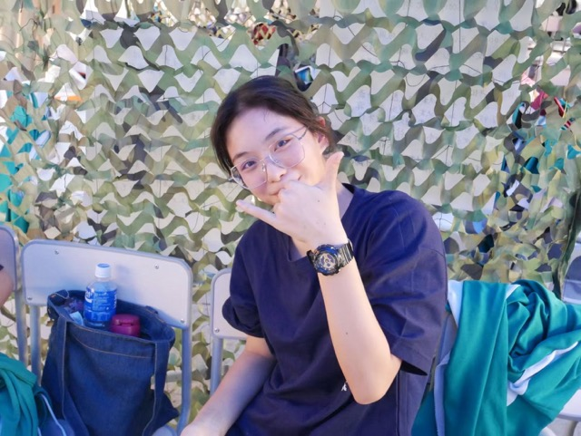

____ _
| _ \ _ _ _ __ _ __ (_)_ __ __ _
| |_) | | | | '_ \| '_ \| | '_ \ / _` |
| _ <| |_| | | | | | | | | | | | (_| |
|_| \_\\__,_|_| |_|_| |_|_|_| |_|\__, |
|___/
I (almost) quitted dancing soon after I entered middle school due to higher academic pressure and turned to running reluctantly for PE exams.
But after training I progressed greatly, an won sixth place for 1500m running in school sports meet.
Running is not fun game but certainly improved my endurance.
Unfortunately, it also left me a knee injury that still bothers me today.